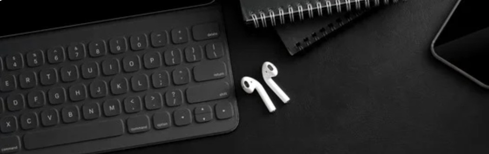
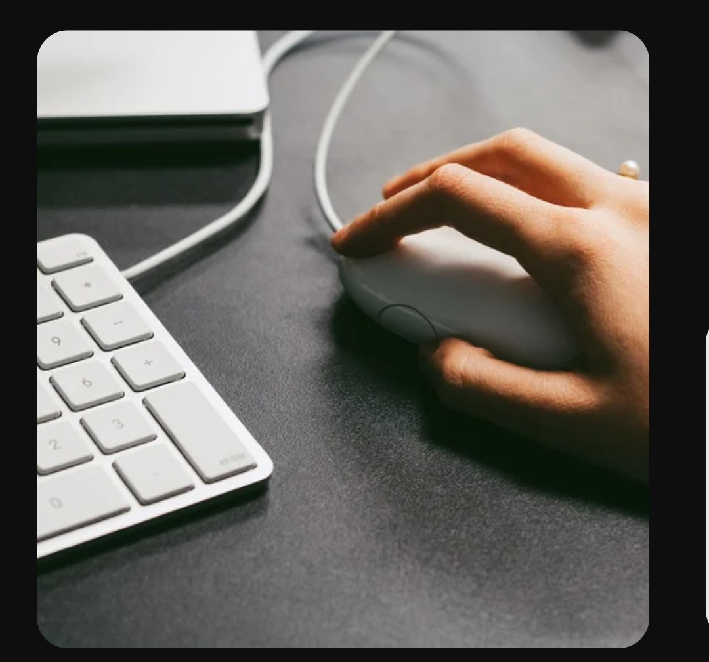
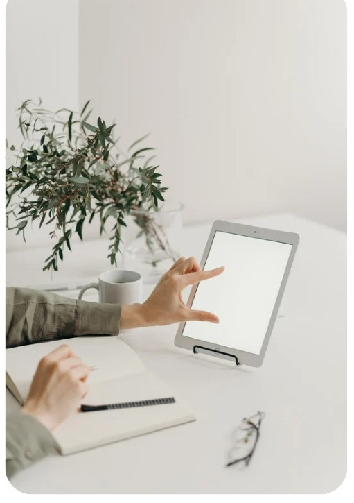
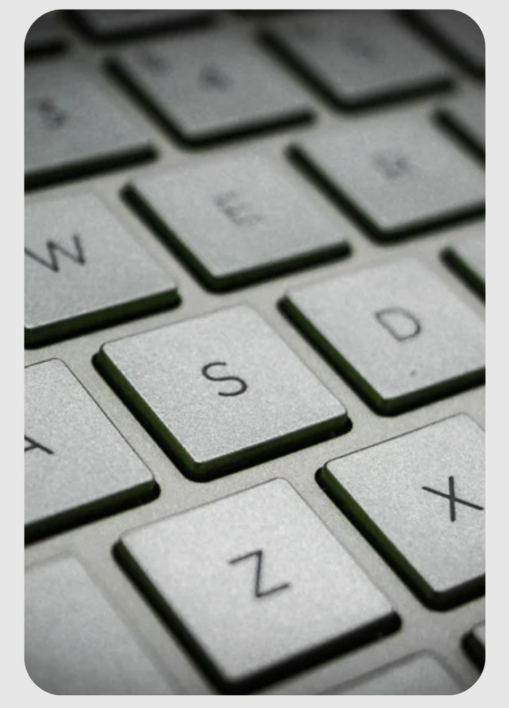

01. Fundamentos e Hardware/Software
Compreenda o funcionamento físico e lógico do computador para operar a máquina com segurança e diagnosticar o ambiente de trabalho.
Passo a Passo: Como o Computador Funciona
📖 Ensino Guiado: Ciclo Correto de Operação
- Inicialização Segura: Pressione o botão Power no gabinete ou notebook. O sistema realiza o teste de hardware e carrega os programas na memória RAM.
- Identificação de Periféricos: Conecte mouse e teclado nas portas USB. Eles enviam sinais de entrada para a CPU processar e exibir na tela.
- Desligamento Correto: Clique em Iniciar > Ligar/Desligar > Desligar para evitar corrupção de dados nos discos.
Diferença entre Hardware e Software
Hardware: Refere-se a toda a parte física e tangível da máquina (Placa-Mãe, Processador, Memória RAM, SSD, teclado, mouse).
Software: Refere-se à parte lógica e intangível, composta pelos programas e pelo Sistema Operacional (Windows, Linux).
💻 Aula Prática 01: Mão na Massa!
- Ligue o computador e identifique a luz indicadora de energia e o botão Power.
- Após o carregamento, abra o menu Iniciar e localize as informações básicas do seu computador (Processador e Memória RAM).
- Realize o procedimento correto de desligamento orientado no sistema.
Questionário de Fixação - Unidade 01
02. Sistema Operacional (Windows ou Linux)
Aprenda a navegar pelo sistema operacional, organizar arquivos corporativos e ajustar configurações essenciais de desempenho.

Passo a Passo: Organização do Sistema Operacional
📖 Ensino Guiado: Gestão Profissional de Arquivos
- Abrir o Explorador de Arquivos: Pressione a combinação de teclas Win + E.
- Criar uma Estrutura de Pastas: Vá em Documentos, clique com o botão direito em uma área vazia e selecione Novo > Pasta. Renomeie para "Curso_Informatica".
- Mover e Copiar Arquivos: Clique no arquivo desejado. Use Ctrl + C para copiar ou Ctrl + X para recortar. Vá até a pasta de destino e pressione Ctrl + V.
- Gerenciar Janelas: Use Alt + Tab para alternar rapidamente entre as janelas e programas abertos.
💻 Aula Prática 02: Mão na Massa!
- Abra o Gerenciador de Arquivos utilizando a combinação Win + E.
- Dentro da pasta Documentos, crie uma pasta chamada "Curso_Informatica".
- Dentro dessa pasta, crie duas subpastas: "Exercicios" e "Modelos".
- Crie um arquivo de texto simples, salve dentro de "Exercicios" e faça uma cópia para a pasta "Modelos".
Questionário de Fixação - Unidade 02
03. Digitação e Manuseio de Periféricos
Desenvolva agilidade, postura ergonômica e domínio técnico sobre o teclado e mouse para alta produtividade no trabalho.

Passo a Passo: Posicionamento dos Dedos
📖 Ensino Guiado: A Arte da Dactilografia Moderna
- Encontre as Teclas Guias: Sinta as pequenas elevações táteis nas teclas F e J.
- Mão Esquerda: Mínimo em A, Anelar em S, Médio em D e Indicador em F.
- Mão Direita: Indicador em J, Médio em K, Anelar em L e Mínimo em Ç.
- Polegares: Posicionados levemente sobre a Barra de Espaço para toque suave.
💻 Aula Prática 03: Treinamento Inicial de Digitação
Acesse o módulo interativo de jogos na barra lateral para praticar os 15 níveis de digitação progressiva!
Questionário de Fixação - Unidade 03
04. Microsoft Word / Google Docs
Aprenda a criar, formatar e estruturar documentos profissionais, currículos campeões e relatórios formais.
Passo a Passo: Formatação de um Documento Profissional
📖 Ensino Guiado: Padronização do Documento
- Configurar Fonte: Selecione todo o texto (Ctrl + A) e defina a fonte como Arial ou Times New Roman, tamanho 12.
- Ajustar Parágrafo: Escolha o alinhamento Justificado (Ctrl + J) e configure o espaçamento entre linhas para 1,5.
- Destacar Títulos: Aplique tamanho 14 com Negrito (Ctrl + N) nas seções principais.
- Exportar para PDF: Clique em Arquivo > Salvar Como / Exportar > Formato PDF para travar o layout.
💻 Aula Prática 04: Mão na Massa (Criação de Currículo)
- Abra o Microsoft Word ou Google Docs no seu computador.
- Digite seus dados profissionais estruturados: Dados Pessoais, Objetivo, Formação Acadêmica e Experiências.
- Aplique fonte Arial tamanho 12 para o texto e tamanho 14 em negrito para os títulos das seções.
- Ajuste o alinhamento e salve o arquivo final exportado em formato PDF.
Questionário de Fixação - Unidade 04
05. Microsoft Excel / Google Planilhas
Crie tabelas organizadas, utilize fórmulas matemáticas automáticas e desenvolva controles de dados eficientes.
Passo a Passo: Como Criar sua Primeira Planilha
📖 Ensino Guiado: Fórmulas Básicas no Excel
- Inserir Cabeçalhos: Na linha 1, digite os títulos: A1 = "Item", B1 = "Quantidade", C1 = "Valor Unitário", D1 = "Total".
- Fórmula de Multiplicação: Na célula D2, insira o sinal de igual e multiplique:
=B2*C2e pressione Enter. - Preenchimento Automático: Clique no canto inferior direito da célula D2 e arraste para baixo para aplicar a fórmula às demais linhas.
- Soma Geral: No final da coluna de totais, insira a fórmula
=SOMA(D2:D10).
💻 Aula Prática 05: Mão na Massa (Controle Financeiro Simples)
- Abra o Excel ou Google Planilhas e crie uma tabela com 3 colunas: Item, Quantidade e Valor Unitário.
- Insira 5 produtos fictícios com seus respectivos valores.
- Na 4ª coluna (Total), crie a fórmula de multiplicação para cada linha (
=Qtd * Valor). - No final da tabela, utilize a fórmula
=SOMA()para calcular o custo total geral.
Questionário de Fixação - Unidade 05
06. PowerPoint / Google Apresentações
Monte apresentações visuais de alto impacto, organizando ideias em slides dinâmicos e profissionais.

Passo a Passo: Como Construir Slides Atraentes
📖 Ensino Guiado: Criação de Slides de Sucesso
- Escolha de Layout: Abra o software de apresentações e escolha um modelo com bom contraste entre fundo e texto.
- Texto Direto e Objetivo: Utilize apenas tópicos e frases curtas. Evite parágrafos muito longos.
- Recursos Visuais: Vá em Inserir > Imagens e coloque fotos ilustrativas para enriquecer o tema.
- Modo Apresentação: Pressione a tecla F5 para testar a apresentação em tela cheia.
💻 Aula Prática 06: Mão na Massa (Apresentação Profissional)
- Abra o PowerPoint ou Google Apresentações.
- Crie o Slide 1 (Capa): Insira o título "Apresentação de Projeto" e seu nome.
- Crie o Slide 2: Insira 3 tópicos curtos explicando os objetivos do seu trabalho.
- Insira uma imagem ilustrativa, aplique uma transição simples entre os slides e pressione a tecla F5 para testar a apresentação em tela cheia.
Questionário de Fixação - Unidade 06
07. Internet, E-mail & Nuvem
Navegue com eficiência na web, gerencie e-mails profissionais e utilize ferramentas de trabalho em nuvem.

Passo a Passo: Comunicação Corporativa & Nuvem
📖 Ensino Guiado: Envio Profissional de E-mail
- Campo Assunto: Digite um título claro e direto (ex: "Relatório Mensal de Vendas").
- Redação do E-mail: Inicie com uma saudação formal, explique o objetivo em texto limpo e conclua com assinatura.
- Anexar Arquivos: Clique no ícone de clipe para anexar arquivos PDF ou documentos do seu computador.
- Trabalho na Nuvem: Salve arquivos no Google Drive ou OneDrive para compartilhamento e edição remota.
💻 Aula Prática 07: Mão na Massa!
- Abra seu navegador de internet e faça uma pesquisa sobre um tema do seu interesse.
- Abra seu provedor de e-mail (Gmail ou Outlook) e crie um novo e-mail formal.
- Anexe o documento em PDF criado na Aula 04 e envie para seu próprio endereço para praticar a checagem da caixa de entrada.
Questionário de Fixação - Unidade 07
08. Segurança da Informação
Proteja seus dados corporativos e pessoais reconhecendo golpes digitais, vírus e adotando hábitos seguros na internet.

Passo a Passo: Como Manter-se Seguro Online
📖 Ensino Guiado: Blindagem Digital
- Cadeado de Segurança: Verifique sempre se o site acessado possui o protocolo seguro
https://na barra do navegador. - Atenção ao Phishing: Desconfie de links recebidos por e-mail ou mensagens com urgência bancária ou ofertas suspeitas.
- Senhas Complexas: Crie senhas misturando letras maiúsculas, minúsculas, números e símbolos (ex:
S3gurancA#2026). - Autenticação em Dois Fatores (2FA): Ative a dupla verificação em suas contas do e-mail e redes sociais.
💻 Aula Prática 08: Mão na Massa (Auditoria de Segurança)
- Abra seu navegador e verifique a presença do ícone de cadeado na barra de endereços.
- Acesse as configurações de segurança do seu e-mail e ative a verificação em duas etapas (2FA).
- Crie uma nova senha forte fictícia seguindo as regras de segurança orientadas nesta aula.
Questionário de Fixação - Unidade 08
Jogo de Digitação & Posição das Mãos
Desenvolva velocidade e precisão. Escolha um dos 15 Jogos/Treinamentos abaixo para iniciar seu treino!
Treinamento 1: Posição Correta das Mãos na Fileira Guia
Posicione os dedos indicadores nas teclas com relevo F e J. Mão esquerda nas teclas A, S, D, F. Mão direita nas teclas J, K, L, Ç. Os polegares acionam a barra de espaço.
Apostila Completa do Curso
Aproveite este material em PDF desenvolvido para servir como guia de consulta rápida no seu dia a dia.
Certificamos para os devidos fins que
concluiu com êxito o Curso Prático de Informática Essencial & Comunicação Digital, com domínio das ferramentas de Hardware, Sistema Operacional, Digitação, Pacote Office (Word, Excel, PowerPoint), Comunicação Web e Segurança da Informação, com carga horária total de 80 horas.